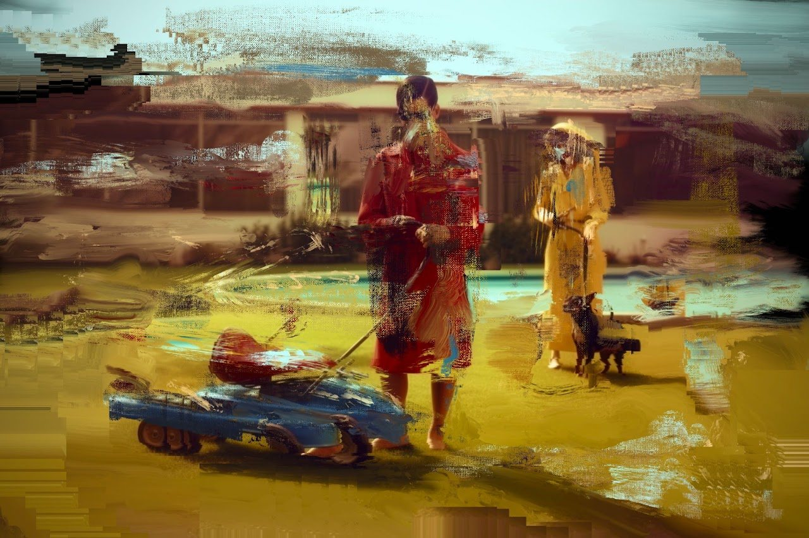
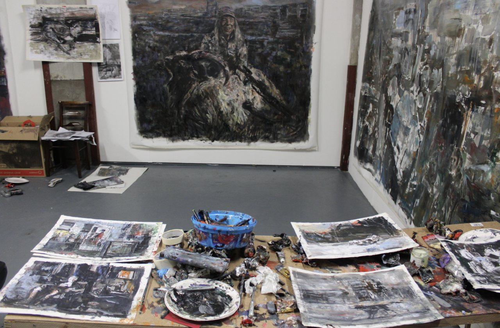
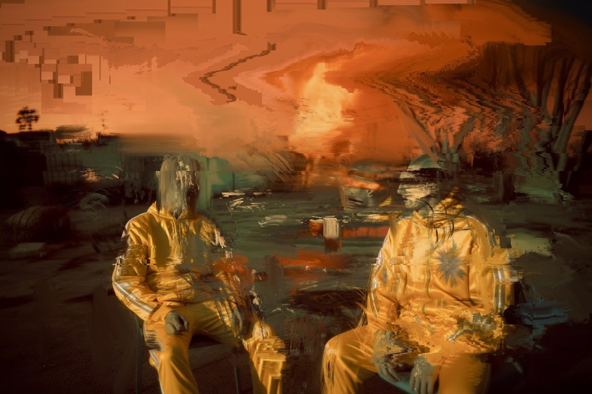
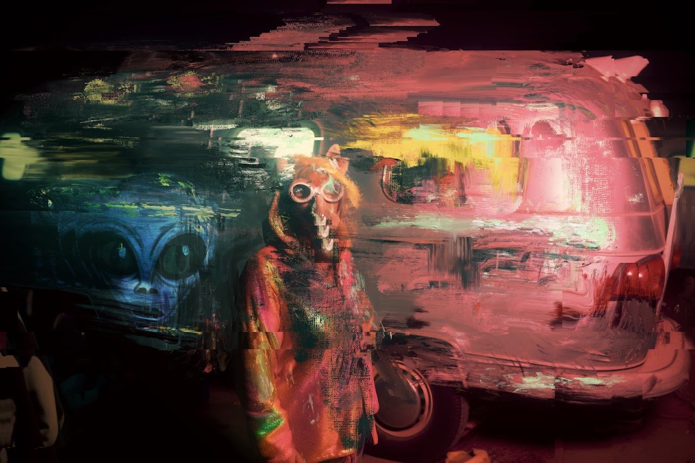
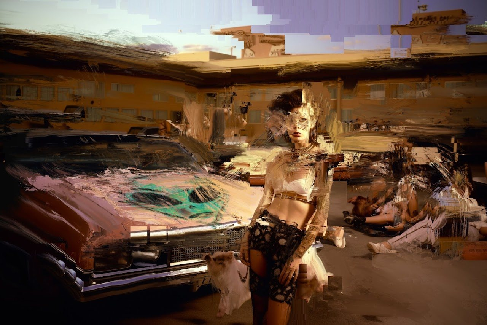
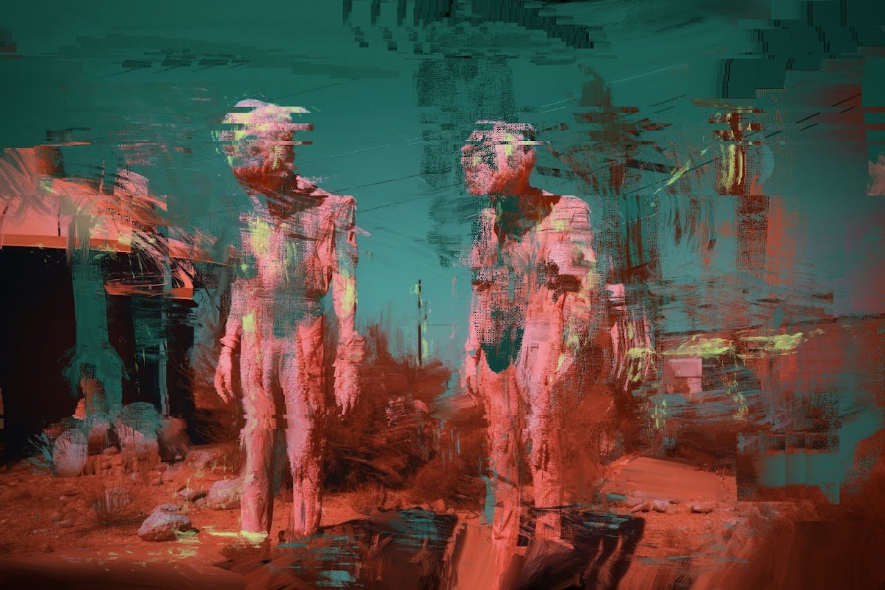
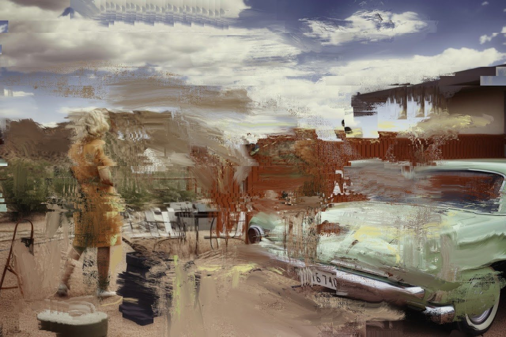
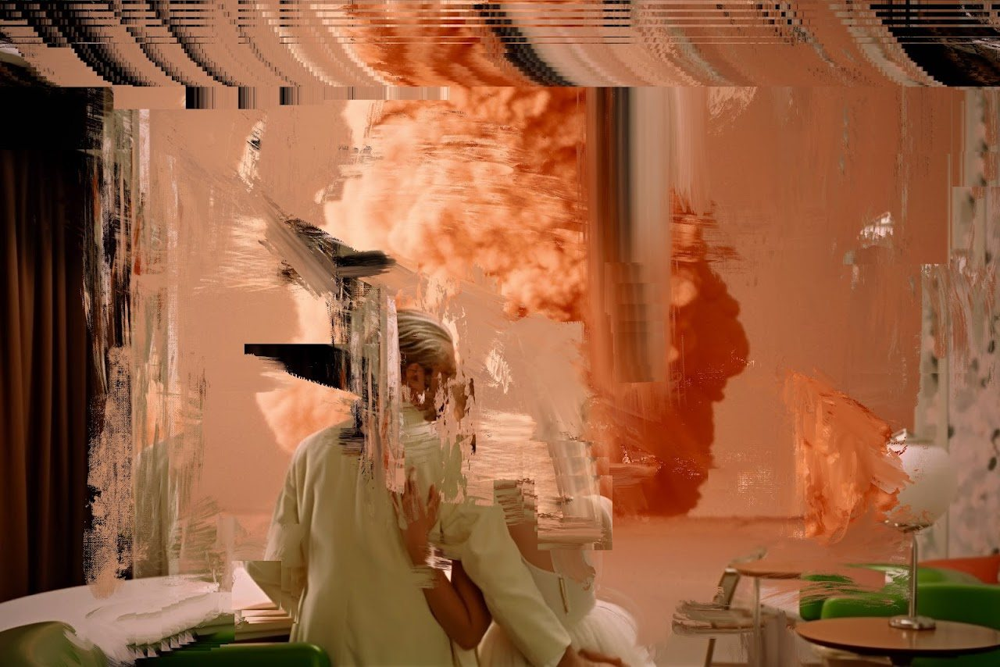
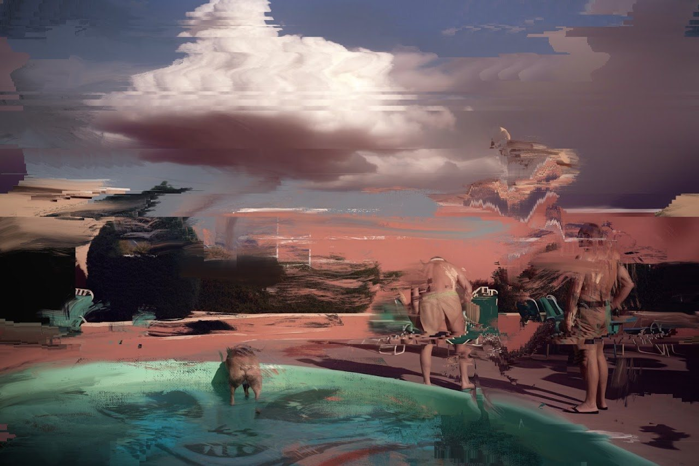
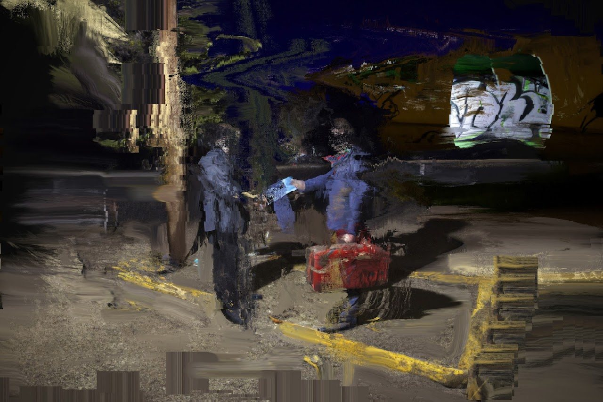

sovrn.art · Curated collection
by Norman Harman
During the last months, Norman Harman has been straying further & further from the motel to pluck the outgrowths of the glitched & morphic wastelands of SIGHTSEERS and offer it to collectors as the exclusive Perimeter Town set.
SIGHTSEERS, Norman Harman's first serial collection, created a world that goes to the roots of both the cryptoart movement and of humanity's current historical crossroads. Based on the sightseers who came to watch the nuclear bomb tests that took place in the desert outside of Las Vegas during the 1950s, the landscape is populated with blithely doomed figures. Against this backdrop, Harman invokes the cataclysmic potential of a new technological frontier: AI.
As one of the defining figures of the cryptoart movement, Harman brings a new depth to AI art. Here, he incorporates his masterful fusion of traditional painting and digital interference, as well as the critical lens that cryptoart holds to decadence, distraction and conformity. SIGHTSEERS was one of the most acclaimed releases of 2022, and it resides in the collections of the space's most notable artists and collectors.
Perimeter Town is the result of Harman's work in the months following SIGHTSEERS, a boutique set that reveals the refined emergences on the perimeter of the SIGHTSEERS world.










Norman Harman is an award winning artist from Scotland. His work has been exhibited across the UK and Europe and he is a member of art collective Ltd Ink Corporation. Harman combines the genres of figurative, landscape and surrealist painting to create metaphysical compositions. The artist combines analogue, and digital painting processes to depict the dissonances of our consumer driven world.
Sightseers: Perimeter Town, Norman Harman. A curated collection on sovrn.art.